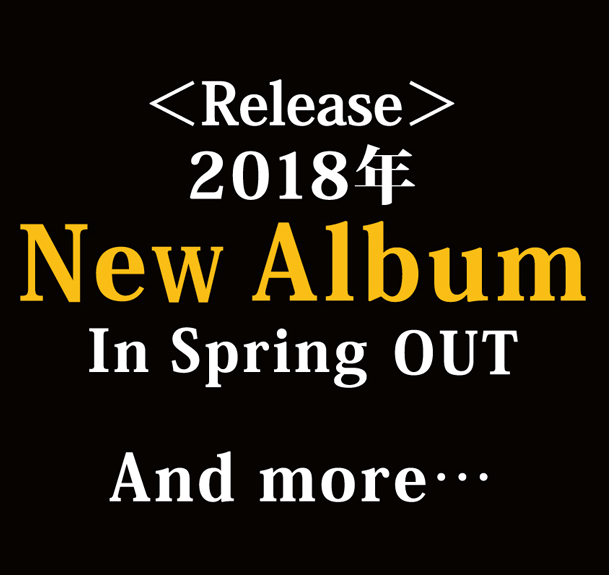

BUCK-TICK announce the second coming of their 30th Annivesary project with single Moon Sayonara wo Oshiete
BUCK-TICK’s latest announcement is the release of their second single for the 30th Anniversary Project. Titled Moon-Sayonara wo Oshiete- (Moon さよならを教えて), the single is to be released on February 21 of next year. This track name may appear familiar as
this is the original title to the track Moon さよならを教えて(Takkyu Ishino Remix) that was included on their recently released single, BABEL.
